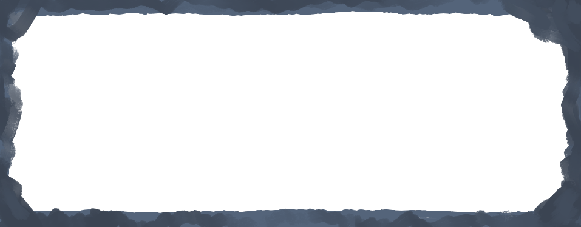

Monster: Gobbo
Health:
100/100


100/100
Proceed with caution!

100/100
Match 2 to trigger an effect [41.67% chance]
Match 3 to automatically win (if player rolls) or lose (if NPC rolls) the game [2.78% chance]
Die Faces:Attack — Deal 20 damage
Defense — Halve incoming damage (for that round only)
Heal — Recover 15 HP
Fortune — Roll again
Poison — Deal 5 damage for 2 turns (if player is poisoned, rest to reset effects)
Sloth — Skip opponent's next turn
REST — Recover 10 HP and clear negative effects
Note: This game is purely based on chance, so some rounds can be quick while others can drag on!